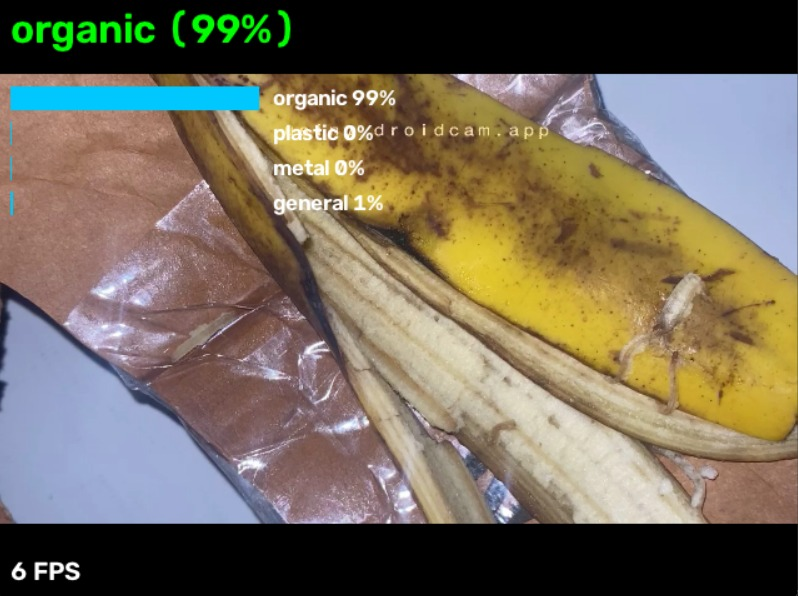
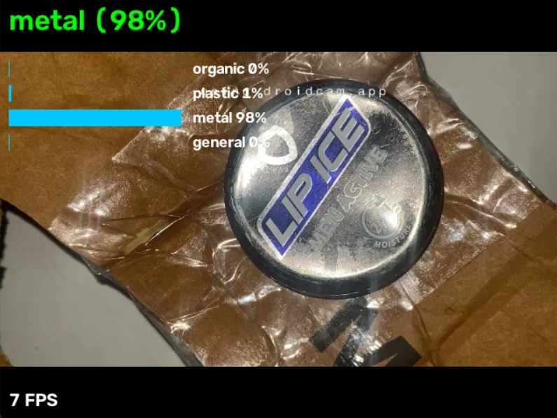
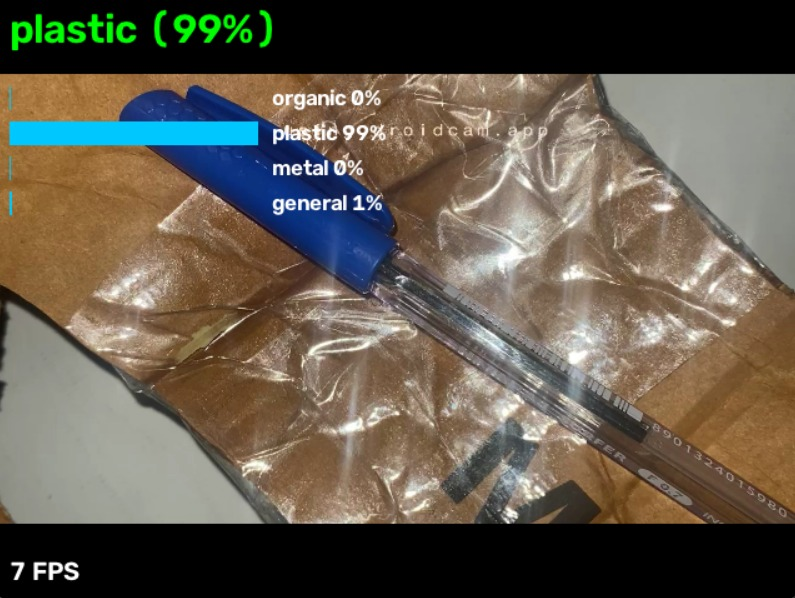
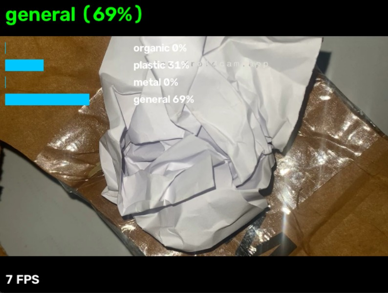

organic items wrongly sent to general (of 423). General precision rose from 0.55 to 0.87, so it stopped acting as a catch-all.
The V2 model on the prototype camera at about 7 fps. Readings settle once an item is still; while items move, the label can briefly flicker.
| Model | Test set | Images | Macro-F1 | Acc. |
|---|---|---|---|---|
| V1 | Validation | 1,718 | 0.966 | 0.970 |
| V1 | RealWaste (all) | 4,058 | 0.622 | 0.634 |
| V1 | test_target | 2,028 | 0.628 | 0.638 |
| V2 | Validation | 2,021 | 0.937 | 0.941 |
| V2 | test_target | 2,028 | 0.868 | 0.866 |
| Class | Recall V1 | Recall V2 | F1 V1 | F1 V2 |
|---|---|---|---|---|
| Organic | 0.435 | 0.969 | 0.595 | 0.950 |
| Plastic | 0.485 | 0.822 | 0.553 | 0.819 |
| Metal | 0.671 | 0.846 | 0.700 | 0.845 |
| General | 0.828 | 0.845 | 0.662 | 0.857 |
Why V1 failed: missing appearances, not wrong labels
V1 predicted general for 56% of RealWaste images, though only 37% were general. Misclassified organic items were mostly garden material; misclassified plastic was crushed, transparent or dirty. The training plastic was clean and intact.
A confidence threshold alone did not fix it: keeping predictions at ≥ 0.9 confidence kept 65% of images at 72.4% accuracy.
What it means
Target-setting images recover most of the loss, so SortBin's next dataset comes from the bin's own camera, light and tray.
Limitations. V2's score reflects RealWaste photo conditions, not performance inside the bin. Validation scores are optimistic (shared sources). Single training run (±1.5 pts). Plastic is the weakest class.




Waste classifier (SO1)
Trained, evaluated and running live on the prototype camera.
Enclosure & tray
Full-scale housing, insertion window and tray.
Sorting & fill monitoring (SO2–SO3)
Routing designed and validated in the 3D simulation; hardware is the next build stage.
Next steps
- A local dataset from the bin's camera, split by session, with a held-out test set.
- A calibrated confidence threshold; uncertain items go to general.
- Compare EfficientNetV2-B0; export to TensorFlow Lite and measure latency on the board.
- Complete the hardware and pilot in a campus building.